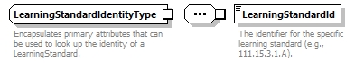
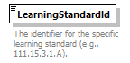

complexType
LearningStandardIdentityType
element LearningStandardIdentityType/LearningStandardId
| diagram |  | ||||
| namespace | http://ed-fi.org/0210 | ||||
| children | LearningStandardId | ||||
| used by |
|
||||
| annotation |
|
||||
| source | <xs:complexType name="LearningStandardIdentityType"> <xs:annotation> <xs:documentation>Encapsulates primary attributes that can be used to look up the identity of a LearningStandard.</xs:documentation> <xs:appinfo> <ann:TypeGroup>Identity</ann:TypeGroup> </xs:appinfo> </xs:annotation> <xs:sequence> <xs:element name="LearningStandardId" type="LearningStandardId"> <xs:annotation> <xs:documentation>The identifier for the specific learning standard (e.g., 111.15.3.1.A).</xs:documentation> </xs:annotation> </xs:element> </xs:sequence> </xs:complexType> |
element LearningStandardIdentityType/LearningStandardId
| diagram |  | |||||||||
| namespace | http://ed-fi.org/0210 | |||||||||
| type | LearningStandardId | |||||||||
| properties |
|
|||||||||
| facets |
|
|||||||||
| annotation |
|
|||||||||
| source | <xs:element name="LearningStandardId" type="LearningStandardId"> <xs:annotation> <xs:documentation>The identifier for the specific learning standard (e.g., 111.15.3.1.A).</xs:documentation> </xs:annotation> </xs:element> |